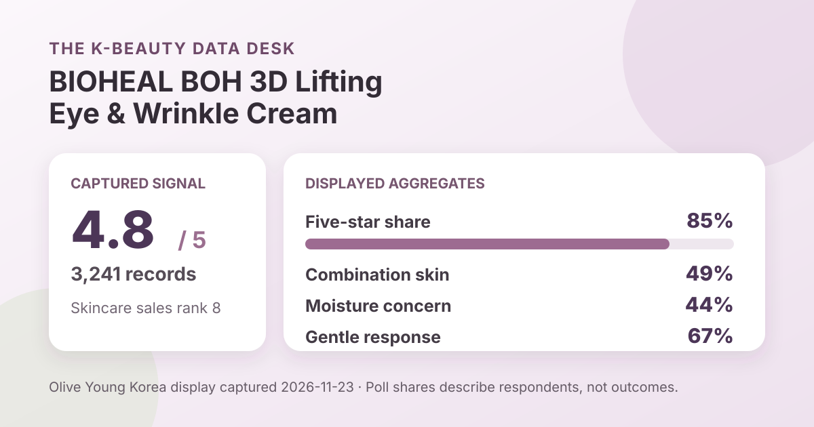
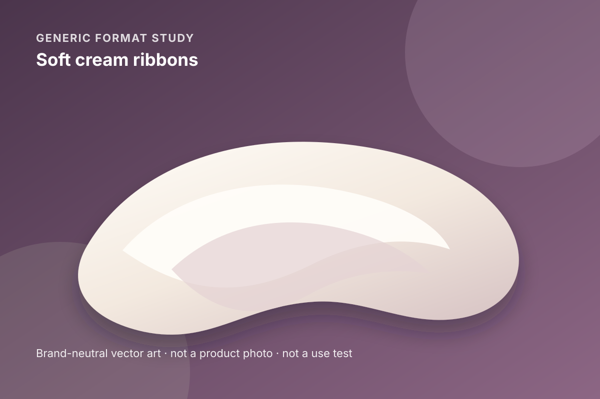

Data captured November 23, 2026. Olive Young Korea displayed “바이오힐보 프로바이오덤 3D 리프팅 아이 & 링클 크림 25ml (더블기획).” This article uses “BIOHEAL BOH Probioderm 3D Lifting Eye & Wrinkle Cream” as a concise English label. It relies only on the live ranking, product identity, aggregate rating, displayed star shares, shopper polls, and a retailer-generated anonymous summary. It does not copy or translate individual reviews, names, profiles, or photographs, and it makes no claim of firsthand use.

The short version: BIOHEAL BOH Probioderm 3D Lifting Eye & Wrinkle Cream appeared at number 8 in the captured skincare sales ranking. The ranking and detail titles agreed, while the product header and official review view both showed 4.8 out of 5 from 3,241 records. Five-star ratings represented 85% of the displayed distribution. Combination skin led the skin-type poll at 49%, moisture led the concern panel at 44%, and gentle led the irritation panel at 67%. These are storefront signals, not proof that the cream lifts skin, changes wrinkles, hydrates the eye area, or suits a particular person.
The official display showed 4.8 stars from 3,241 review records. That is enough volume to describe the current storefront signal with more context than a tiny launch sample: the average is high, and the visible distribution is concentrated at four and five stars. It remains observational retail feedback. It cannot isolate the cream from expectations, promotion, routine, climate, packaging, or the reasons people chose to leave feedback.
The captured listing was a double plan built around a 25 ml eye and wrinkle cream. Records accumulated under the listing may cover more than one promotional configuration, price, and packaging moment. The interface did not expose a verified-buyer denominator, raw rating counts, or a method for separating comments about the formula from comments about value, gifts, shipping, or presentation.
The defensible conclusion is narrow: the captured listing had a favorable aggregate rating across 3,241 records. That does not establish a change in wrinkle depth, firmness, elasticity, eye-area hydration, darkness, puffiness, or any clinical outcome, and it does not show superiority over another eye cream.
The official rows showed 85% five-star, 11% four-star, 3% three-star, and 0% each for two-star and one-star. These rounded shares total 99%, not 100%, which is a useful reminder that the interface presents rounded percentages rather than raw counts. They are directionally consistent with the 4.8 average.
A displayed zero can conceal a small underlying share after rounding, so it does not prove that no low ratings exist. The distribution also describes satisfaction labels rather than causes. It cannot tell us how long people used the cream, how much they applied, whether it migrated toward the eyes, or whether reviewers evaluated the same bundle under consistent conditions.
The displayed skin-type responses were 49% combination, 47% dry, and 4% oily. The rows total 100%. Combination led by only two percentage points, so the most useful reading is that both combination and dry labels were strongly represented in the response sample, while oily responses formed a much smaller share.
This is sample composition rather than a product-fit score. A person selecting “combination” may still have a dry eye area, seasonal sensitivity, or localized oiliness. The platform did not disclose the poll denominator or matched outcomes by skin type, so the percentages cannot support a claim that either group benefits more or that oily skin is poorly suited.
The concern panel displayed 44% moisture, 35% wrinkle or brightening, and 21% soothing. The rows total 100%. Moisture led, while the wrinkle or brightening category was also prominent. These are shopper-poll labels, not measurements of skin water content, transepidermal water loss, wrinkle depth, elasticity, pigmentation, or luminance.
No corneometer, imaging protocol, baseline, comparator, application schedule, or follow-up interval was part of the capture. The 44% moisture share is not a 44% hydration increase, and the 35% wrinkle or brightening share is not a response rate for either wrinkle or color change. Combining wrinkle and brightening in one retailer label also prevents separate interpretation.
The irritation panel showed 67% gentle, 30% ordinary, and 2% felt irritation. These rounded rows total 99%. The leading response is favorable, but it is less dominant than on many listings, and all three rows matter because the eye area can be particularly sensitive.
A retailer poll cannot predict stinging, watering, eyelid irritation, contact allergy, fragrance sensitivity, migration into the eyes, or interactions with retinoids, exfoliants, acne treatments, sunscreen, and makeup. The display did not specify whether responses referred only to the eye area, how much product was used, or whether participants had known eye conditions. Avoid direct eye contact and follow the current product directions rather than treating a poll as a safety guarantee.
The retailer labeled 94% of an undisclosed recent-review subset as positive. Its anonymous automated summary grouped broad discussion around moisturization and cream feel, value or double-plan configuration, and mild-feeling use around the eye area. These are retailer-generated aggregate themes, not direct quotes and not independent findings.
The interface did not disclose how many recent records entered the summary, how positive and negative labels were assigned, whether one record could contribute to multiple themes, or how representative that subset was of all 3,241 records. The themes identify recurring discussion areas, but they cannot establish prevalence across the full review base or verify performance.

“Probioderm 3D Lifting Eye & Wrinkle Cream” is the retailer-displayed product name. In general skincare language, an eye cream is a leave-on emulsion marketed for the eye area, but that category does not define thickness, spread, absorption, migration, residue, scent, finish, or makeup compatibility. “3D Lifting” and “wrinkle” in a name do not provide an instrument result or a medical claim.
I did not open, dispense, spread, layer, or wear this cream. The local visual uses abstract ribbons to communicate a generic cream format without reproducing the package, cream color, or a real swatch. Actual sensory behavior depends on the current formula, amount, application method, skin condition, temperature, humidity, and surrounding routine.
The captured product title did not provide a verified active concentration, and this analysis did not independently audit the current formula. A line name cannot reveal which ingredients drive the finished product, their amounts, stability, delivery, or contribution to user experience. I therefore do not infer peptide, probiotic-derived, retinoid, or other ingredient content or assign a biological mechanism from “Probioderm.”
Readers seeking current ingredient, allergen, fragrance, eye-contact, or regional-formula details should consult the package and the brand's current disclosure. Formula and labeling can change independently of accumulated review records, and the Korean promotional listing may not match every regional configuration.
Rank 8 describes one capture of Olive Young Korea's skincare sales list. It is not a clinical ranking or a claim that this is the eighth-best eye product. Advertising, inventory, discounting, bundle size, gifts, influencer exposure, seasonality, and short-term demand can move a listing rapidly.
The captured page showed a 25 ml double plan, a ₩35,000 reference price, and a ₩22,900 promotional price. Those details can change separately from the review aggregates. Before purchase, confirm the current seller, formula, volume, bundle contents, stock, expiry information, return terms, directions for use near the eyes, and checkout price on the live listing.
The captured official display showed 4.8 out of 5 from 3,241 records. Displayed star shares were 85% five-star, 11% four-star, 3% three-star, and 0% each for two-star and one-star.
Combination skin led at 49%, followed closely by dry at 47% and oily at 4%. These shares describe the displayed response sample and do not prove suitability.
No. A product name is not an instrument measurement, controlled comparison, or clinical endpoint. This analysis did not test lifting or wrinkle change.
No. The 67% aggregate cannot predict stinging, watering, allergy, irritation, migration, routine interactions, or an individual's response.
No. This article analyzes retailer-displayed aggregates only and uses brand-neutral vector artwork rather than a product or user photograph.
Source: Olive Young Korea product listing and official aggregate review statistics, captured November 23, 2026. Open the source product page.
Published by The K-Beauty Data Desk. The source does not independently verify every buyer's identity, and this page is an editorial analysis of retailer-displayed aggregates—not medical advice or a substitute for the current product label.
← All reviews · Review-volume rankings · Skin-poll explorer · Methodology